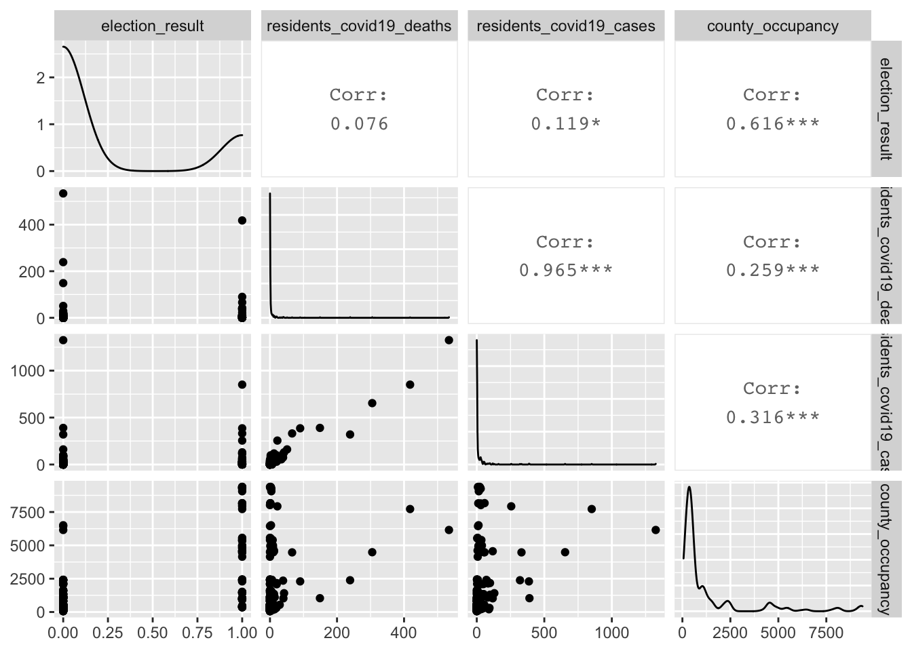
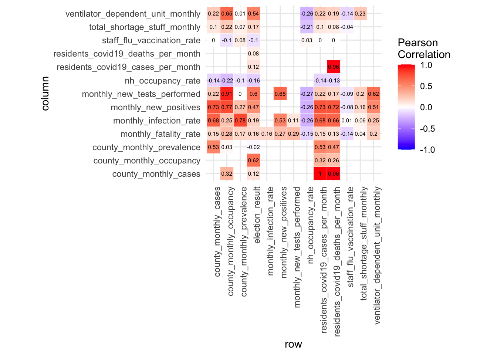
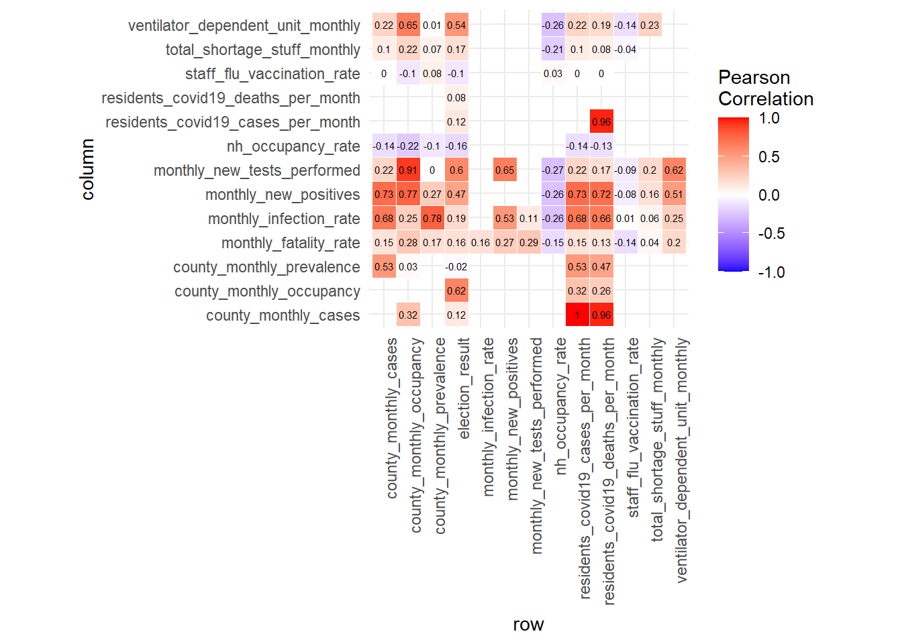
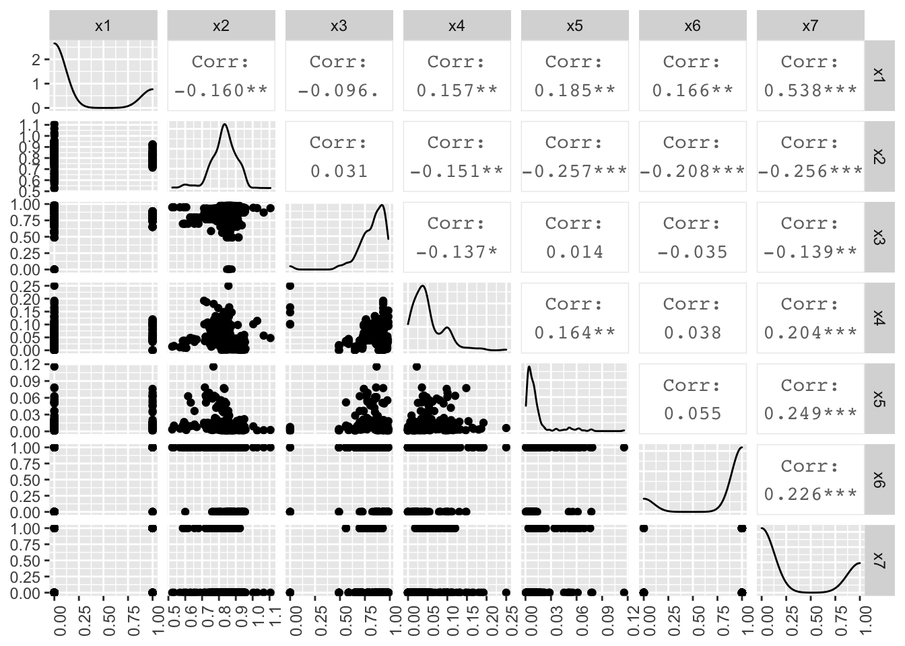

Analysis
In this section we are going to do the following three analysis: Correlation Matrix, Wilcoxon Rank-sum Test and Regression.
1. Correlation Matrix
library(tidyverse)
library(corrplot)
library("Hmisc")
library("PerformanceAnalytics")
library(lmtest)
library(sjPlot)data1 =
read_csv("./data/overall_df_2020.11.27.csv")## Parsed with column specification:
## cols(
## month = col_double(),
## county = col_character(),
## residents_covid19_deaths_per_month = col_double(),
## residents_covid19_cases_per_month = col_double(),
## NH_monthly_fatality_rate = col_double(),
## county_monthly_occupancy = col_double(),
## county_monthly_cases = col_double(),
## county_monthly_prevalence = col_double(),
## NH_occupancy_rate = col_double(),
## staff_flu_vaccination_rate = col_double(),
## total_supply_ppe_monthly = col_double(),
## total_shortage_stuff_monthly = col_double(),
## ventilator_dependent_unit_monthly = col_double(),
## monthly_new_positives = col_double(),
## monthly_new_tests_performed = col_double(),
## monthly_infection_rate = col_double(),
## monthly_fatality_rate = col_double()
## )data2 =
read_csv("./data/county_poll.csv")## Parsed with column specification:
## cols(
## county = col_character(),
## election_result = col_character()
## )final_df =
left_join(data1, data2, by = "county")
write_csv(final_df, path = "./data/final_df.csv")my_data =
read_csv("./data/final_df.csv") %>%
janitor::clean_names() %>%
relocate(election_result) %>%
mutate(
election_result = recode(election_result, "D" = "1", "R" = "0")
) %>%
mutate(election_result = as.numeric(election_result)) %>%
select(-county,-month, -nh_monthly_fatality_rate, -total_supply_ppe_monthly) # reasons to delete last two variables is corr coef are NA.
res = cor(my_data, use = "complete.obs") #handle missing value
res2 = rcorr(as.matrix(my_data)) # calculate the correlation p-values
# Extract the correlation coefficients：res2$r
# Extract p-values：res2$P
# format the correlation matrix
flattenCorrMatrix <- function(cormat, pmat) {
ut <- upper.tri(cormat)
data.frame(
row = rownames(cormat)[row(cormat)[ut]],
column = rownames(cormat)[col(cormat)[ut]],
cor =(cormat)[ut],
p = pmat[ut]
)
}
res2 = rcorr(as.matrix(my_data[,1:14]))
tidy_df =
flattenCorrMatrix(res2$r, res2$P) %>%
mutate_if(is.numeric, ~round(., 2))
#display a chart of a correlation matrix
#chart.Correlation(my_data, histogram=TRUE, pch=19)
# heat map
col<- colorRampPalette(c("blue", "white", "red"))(20)
heatmap(x = res, col = col, symm = TRUE)
ggplot(data =tidy_df, aes(x=row, y=column, fill=cor))+
geom_tile(color = "white")+
scale_fill_gradient2(low = "blue", high = "red", mid = "white",
midpoint = 0, limit = c(-1,1), space = "Lab",
name="Pearson\nCorrelation") +
theme_minimal()+
theme(axis.text.x = element_text(angle = 90, vjust = 1,
size = 9, hjust = 1))+
coord_fixed() +
geom_text(aes(x=row, y=column, label=cor), color = "black", size = 2)
2. Wilcoxon Rank-sum Test
We are going to Compare the NY State residents and nursing home seniors’ medians level of fatality rate and infection rate.
a) Compare the NY State residents and nursing home seniors’ medians level of fatality rate.
test normality
library(rvest)
library(lattice)
library(faraway)
library(broom)nursing_house_df =
read_csv("./data/final_df.csv") %>%
janitor::clean_names() %>%
select(nh_monthly_fatality_rate) %>%
drop_na() %>%
filter_all(all_vars(!is.infinite(.)))
residents_df =
read_csv("./data/final_df.csv") %>%
janitor::clean_names() %>%
select(monthly_fatality_rate) %>%
drop_na()par(mfrow=c(2,2))
hist(nursing_house_df$nh_monthly_fatality_rate, xlab = "nh_monthly_fatality_rate", freq=T, main="nursing home monthly fatality rate")
hist(residents_df$monthly_fatality_rate, xlab = "monthly_fatality_rate", freq=T, main="residents monthly fatality rate")
qqnorm(nursing_house_df$nh_monthly_fatality_rate, col=2, pch=19, cex=1.5)
qqline(nursing_house_df$nh_monthly_fatality_rate, col = 1,lwd=2,lty=2)
qqnorm(residents_df$monthly_fatality_rate, col=2, pch=19, cex=1.5)
qqline(residents_df$monthly_fatality_rate, col = 1,lwd=2,lty=2)
From the Histogram and QQ Plot, we can see that the distribution of nursing home monthly fatality rate and residents monthly fatality rates are heavily right skewed. Therefore, they violated the normality assumptions. We are going to use non-parametric test: Wilcoxon Rank - Sum Test to do the following hypothesis test:
H0: The medians level of monthly fatality rate are the same for NY State residents and nursing home seniors.
Ha: The medians level of monthly fatality rate are different for NY State residents and nursing home seniors.
res <- wilcox.test(nursing_house_df$nh_monthly_fatality_rate, residents_df$monthly_fatality_rate, mu=0)
nursing_house_df %>% count()## # A tibble: 1 x 1
## n
## <int>
## 1 172residents_df %>% count()## # A tibble: 1 x 1
## n
## <int>
## 1 300res$statistic<-res$statistic + 300*(300+1)/2
res##
## Wilcoxon rank sum test with continuity correction
##
## data: nursing_house_df$nh_monthly_fatality_rate and residents_df$monthly_fatality_rate
## W = 72365, p-value = 0.3194
## alternative hypothesis: true location shift is not equal to 0From the Wilcoxon rank sum test with continuity correction, we can see the p-value is 0.3194 > 0.05. Therefore, we fail to reject null hypothesis. We are 95% confident that the medians level of monthly fatality rate are the same for NY State residents and nursing home seniors.
b) Compare the NY State residents and nursing home seniors’ medians level of infection rate.
test normality
nursing_house_df2 =
read_csv("./data/final_df.csv") %>%
janitor::clean_names() %>%
select(county_monthly_prevalence) %>%
rename(nh_monthly_infection_rate = county_monthly_prevalence) %>%
drop_na() %>%
filter_all(all_vars(!is.infinite(.)))
residents_df2 =
read_csv("./data/final_df.csv") %>%
janitor::clean_names() %>%
select(monthly_infection_rate) %>%
drop_na()par(mfrow=c(2,2))
hist(nursing_house_df2$nh_monthly_infection_rate, xlab = "nh_monthly_fatality_rate", freq=T, main="nursing home monthly fatality rate")
hist(residents_df2$monthly_infection_rate, xlab = "monthly_fatality_rate", freq=T, main="residents monthly fatality rate")
qqnorm(nursing_house_df2$nh_monthly_infection_rate, col=2, pch=19, cex=1.5)
qqline(nursing_house_df2$nh_monthly_infection_rate, col = 1,lwd=2,lty=2)
qqnorm(residents_df2$monthly_infection_rate, col=2, pch=19, cex=1.5)
qqline(residents_df2$monthly_infection_rate, col = 1,lwd=2,lty=2)
From the Histogram and QQ Plot, we can see that the distribution of nursing home monthly infection rate and residents monthly infection rates are heavily right skewed. Therefore, they violated the normality assumptions. We are going to use non-parametric test: Wilcoxon Rank - Sum Test to do the following hypothesis test:
H0: The medians level of monthly infection rate are the same for NY State residents and nursing home seniors.
Ha: The medians level of monthly infection rate are different for NY State residents and nursing home seniors.
res <- wilcox.test(nursing_house_df2$nh_monthly_infection_rate, residents_df2$monthly_infection_rate, mu=0)
nursing_house_df2 %>% count()## # A tibble: 1 x 1
## n
## <int>
## 1 311residents_df2 %>% count()## # A tibble: 1 x 1
## n
## <int>
## 1 300res$statistic<-res$statistic + 311*(311+1)/2
res##
## Wilcoxon rank sum test with continuity correction
##
## data: nursing_house_df2$nh_monthly_infection_rate and residents_df2$monthly_infection_rate
## W = 70184, p-value < 2.2e-16
## alternative hypothesis: true location shift is not equal to 0From the Wilcoxon rank sum test with continuity correction, we can see the p-value is 2.2e-16 < 0.05. Therefore, we reject null hypothesis. We are 95% confident that the medians level of monthly fatality rate are the different for NY State residents and nursing home seniors.
3. Multiple Linear Regression with Panel Data
a)MLR model: panel data regression using backward elimination to select features
- filter NAs in predictors
- Select potential predictors according to correlation matrix and epidemiology concept
- create initial model with longitudinal data
- using backward elimination to do feature selection
- diagnostics with homoskedasticity and residual
my_data_lm =
read_csv("./data/final_df.csv") %>%
janitor::clean_names() %>%
relocate(election_result) %>%
mutate(
election_result = ifelse(election_result=="D", "1","0")
) %>%
mutate(
election_result = as.numeric(election_result),
county = as.factor(county),
month = as.factor(month)
) %>%
mutate(
nh_occupancy_rate = ifelse(nh_occupancy_rate >= 1, NA,nh_occupancy_rate)
) %>%
drop_na() %>%
filter_all(all_vars(is.finite(.)))# all potential predictors
multi_fit =
lm(county_monthly_prevalence
~ election_result
+ nh_occupancy_rate
+ staff_flu_vaccination_rate
+ total_shortage_stuff_monthly
+ ventilator_dependent_unit_monthly
+ monthly_infection_rate
+ monthly_fatality_rate,
data = my_data
)
summary(multi_fit)##
## Call:
## lm(formula = county_monthly_prevalence ~ election_result + nh_occupancy_rate +
## staff_flu_vaccination_rate + total_shortage_stuff_monthly +
## ventilator_dependent_unit_monthly + monthly_infection_rate +
## monthly_fatality_rate, data = my_data)
##
## Residuals:
## Min 1Q Median 3Q Max
## -0.103403 -0.011311 0.000596 0.010279 0.232158
##
## Coefficients:
## Estimate Std. Error t value Pr(>|t|)
## (Intercept) -6.569e-02 2.489e-02 -2.639 0.00887 **
## election_result -3.609e-03 5.605e-03 -0.644 0.52033
## nh_occupancy_rate 3.561e-02 2.476e-02 1.438 0.15169
## staff_flu_vaccination_rate 1.759e-02 1.224e-02 1.437 0.15195
## total_shortage_stuff_monthly -6.633e-05 5.293e-03 -0.013 0.99001
## ventilator_dependent_unit_monthly -2.151e-02 5.255e-03 -4.093 5.87e-05 ***
## monthly_infection_rate 3.865e+00 1.894e-01 20.403 < 2e-16 ***
## monthly_fatality_rate 1.500e-01 5.165e-02 2.905 0.00403 **
## ---
## Signif. codes: 0 '***' 0.001 '**' 0.01 '*' 0.05 '.' 0.1 ' ' 1
##
## Residual standard error: 0.03022 on 234 degrees of freedom
## (118 observations deleted due to missingness)
## Multiple R-squared: 0.6597, Adjusted R-squared: 0.6496
## F-statistic: 64.82 on 7 and 234 DF, p-value: < 2.2e-16# backward elimination
step1 = update(multi_fit, . ~ . -total_shortage_stuff_monthly)
#step2
step2 = update(step1, .~. -election_result)
#step3
step3 = update(step2, .~. -nh_occupancy_rate)
# stpe4
step4 = update(step3, .~. -staff_flu_vaccination_rate)
# diagnostic MLR
layout(matrix(c(1,2,3,4),2,2)) # optional 4 graphs/page
diag_plot1 = plot(step4)
diag_plot1## NULL# test heteroskedasticity
bptest(step4)##
## studentized Breusch-Pagan test
##
## data: step4
## BP = 75.091, df = 3, p-value = 3.464e-16# ensemble models summary table
mlr_tab1 =
tab_model(step4, step3, step2, step1, show.p = TRUE, show.ci = FALSE)
mlr_tab1| county monthly prevalence | county monthly prevalence | county monthly prevalence | county monthly prevalence | |||||
|---|---|---|---|---|---|---|---|---|
| Predictors | Estimates | p | Estimates | p | Estimates | p | Estimates | p |
| (Intercept) | -0.02 | <0.001 | -0.04 | 0.001 | -0.07 | 0.004 | -0.07 | 0.006 |
| ventilator_dependent_unit_monthly | -0.02 | <0.001 | -0.02 | <0.001 | -0.02 | <0.001 | -0.02 | <0.001 |
| monthly_infection_rate | 3.83 | <0.001 | 3.81 | <0.001 | 3.87 | <0.001 | 3.86 | <0.001 |
| monthly_fatality_rate | 0.13 | 0.008 | 0.15 | 0.004 | 0.15 | 0.002 | 0.15 | 0.004 |
| staff_flu_vaccination_rate | 0.02 | 0.126 | 0.02 | 0.130 | 0.02 | 0.151 | ||
| nh_occupancy_rate | 0.04 | 0.132 | 0.04 | 0.146 | ||||
| election_result | -0.00 | 0.518 | ||||||
| Observations | 252 | 247 | 247 | 242 | ||||
| R2 / R2 adjusted | 0.661 / 0.657 | 0.664 / 0.659 | 0.667 / 0.661 | 0.660 / 0.651 | ||||
2. Simple MLR without longitudinal form
a) MLR stepwise AIC regression
- convert data to non-longitudinal form
- use step AIC regression to perform feature selection
- diagnostics
# clear entity and states
no.na.data =
my_data_lm %>%
na.omit() %>%
select(
-county,
-month
)
# step AIC regression
aic_res <- lm(county_monthly_prevalence ~ ., data=no.na.data)
step_ml = step(aic_res, direction='backward', trace = 0)
summary(step_ml)##
## Call:
## lm(formula = county_monthly_prevalence ~ residents_covid19_deaths_per_month +
## residents_covid19_cases_per_month + county_monthly_occupancy +
## nh_occupancy_rate + ventilator_dependent_unit_monthly + monthly_new_positives +
## monthly_new_tests_performed + monthly_infection_rate + monthly_fatality_rate,
## data = no.na.data)
##
## Residuals:
## Min 1Q Median 3Q Max
## -0.079114 -0.015448 0.000492 0.014687 0.187169
##
## Coefficients:
## Estimate Std. Error t value Pr(>|t|)
## (Intercept) -1.294e-01 4.293e-02 -3.014 0.003204 **
## residents_covid19_deaths_per_month -3.536e-04 1.974e-04 -1.791 0.076042 .
## residents_covid19_cases_per_month 2.843e-04 7.576e-05 3.753 0.000282 ***
## county_monthly_occupancy -8.906e-06 4.466e-06 -1.994 0.048617 *
## nh_occupancy_rate 1.136e-01 4.891e-02 2.322 0.022070 *
## ventilator_dependent_unit_monthly -2.396e-02 7.433e-03 -3.224 0.001670 **
## monthly_new_positives -2.943e-05 6.778e-06 -4.342 3.17e-05 ***
## monthly_new_tests_performed 5.187e-07 1.792e-07 2.894 0.004593 **
## monthly_infection_rate 4.404e+00 3.085e-01 14.272 < 2e-16 ***
## monthly_fatality_rate 4.481e-01 1.076e-01 4.163 6.30e-05 ***
## ---
## Signif. codes: 0 '***' 0.001 '**' 0.01 '*' 0.05 '.' 0.1 ' ' 1
##
## Residual standard error: 0.03259 on 109 degrees of freedom
## Multiple R-squared: 0.7925, Adjusted R-squared: 0.7754
## F-statistic: 46.26 on 9 and 109 DF, p-value: < 2.2e-16# diagnostics
layout(matrix(c(1,2,3,4),2,2)) # optional 4 graphs/page
plot(step_ml)
# test heteroskedasticity
bptest(step_ml)##
## studentized Breusch-Pagan test
##
## data: step_ml
## BP = 44.67, df = 9, p-value = 1.062e-06# summary table
mlr_tab2 =
tab_model(step_ml, show.p = TRUE, show.ci = FALSE)
mlr_tab2| county monthly prevalence | ||
|---|---|---|
| Predictors | Estimates | p |
| (Intercept) | -0.13 | 0.003 |
| residents_covid19_deaths_per_month | -0.00 | 0.076 |
| residents_covid19_cases_per_month | 0.00 | <0.001 |
| county_monthly_occupancy | -0.00 | 0.049 |
| nh_occupancy_rate | 0.11 | 0.022 |
| ventilator_dependent_unit_monthly | -0.02 | 0.002 |
| monthly_new_positives | -0.00 | <0.001 |
| monthly_new_tests_performed | 0.00 | 0.005 |
| monthly_infection_rate | 4.40 | <0.001 |
| monthly_fatality_rate | 0.45 | <0.001 |
| Observations | 119 | |
| R2 / R2 adjusted | 0.793 / 0.775 | |